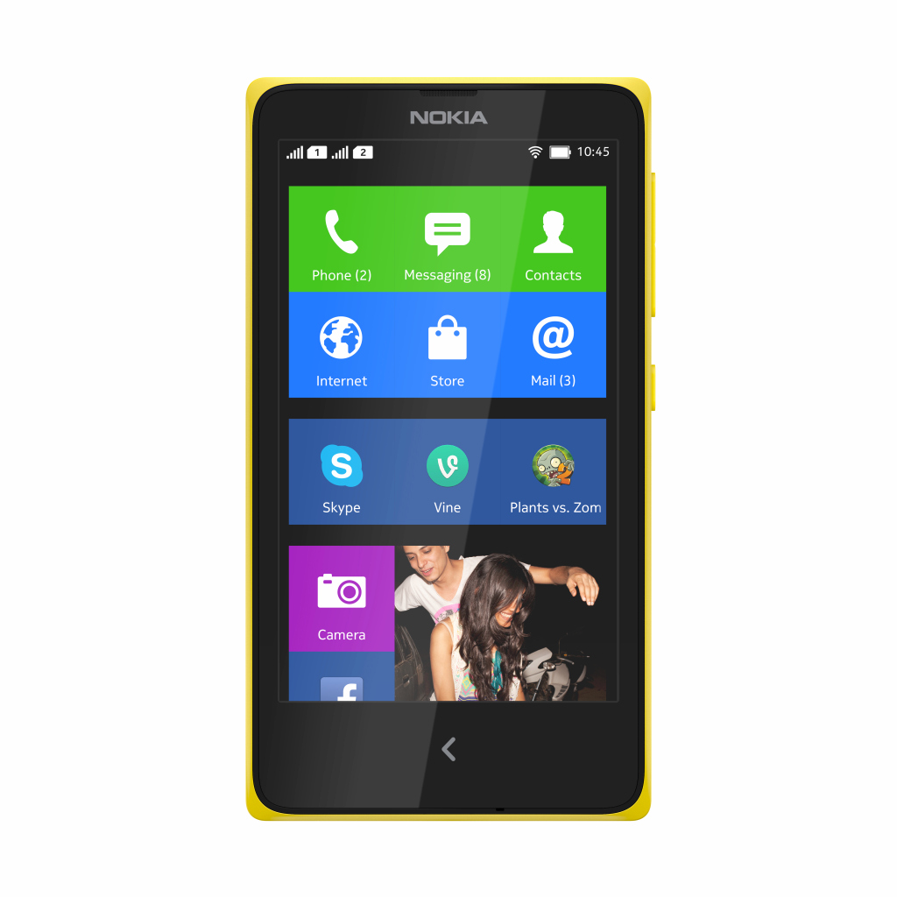

Any News I find interesting in the technology world will be posted here in some shape or form.
In order to regain some footing in the smartphone business, Nokia is forking the Android platform. Jack Wallen reacts with his solution for Nokia.

More proof, if proof were needed, that Android won the smartphone OS wars: Nokia, the former world No.1 smartphone maker and, nowadays, the primary OEM for Microsoft’s third-placed Windows Phone platform has just announced a new family of smartphones built upon the Android Open Source Project — confirming a slew of earlier rumours that Nokia was cooking up an Android device strategy.
The first device in Nokia’s Droidy new family was unveiled today at its Mobile World Conference press conference in Barcelona, with both the forthcoming family and this its debut member known as the Nokia X (Update: Nokia also announced the Nokia X+: the same handset but with additional memory, (coming early Q2, for €99/$136); and the Nokia XL, a larger handset with a 5-inch display, also coming in early Q2 for €109/$150).
The twist is it doesn’t look like the standard icon-filled Android that the market is used to, being dressed up in a new Nokia UI.
“The Nokia X software platform is built upon AOSP, Android Open Source Project,” said Nokia’s marketing director for its mobile phones division, Neil Broadley. ”What we’ve done is we’ve built the Nokia X software platform on standard Android open source, and then on top of that we’ve built the Nokia user experience layer — so the Nokia UI — so Fast Lane and the homescreen.
“The homescreen is tile-based, so it’s similar to a [Windows Phone-based] Lumia. It incorporates some elements of that — some limited live information into the tiles. We’ve also put in Nokia and Microsoft services.”
“The sub-$100 price range is a massive opportunity for us,” said Nokia’s outgoing CEO Stephen Elop, describing the range as a “different but complementary opportunity to introduce a new family that strengthens our affordable [devices] family”.
“The Nokia X takes people to Microsoft’s cloud, not to Google’s cloud,” he added.
The 4-inch wVGA, dual-core 1GHz Qualcomm Snapdragon handset, which comes in Nokia’s now familiar spectrum of eye-arresting colours (including bright green, red and yellow) and also packs a 3MP camera, costs €89/$122 (excluding taxes & subsidies) — and is launching immediately, shipping as early as next week.
Nokia said it is planning a global rollout for the X but the initial focus will be on “key, fast-growing emerging markets” — including India, China, Indonesia, Thailand, Vietnam and Russia. Aka, markets where low cost Androids are already well established.
The Nokia X’s price-point undercuts the affordably priced Moto G handset, for instance, a relatively recent Android that is also targeting emerging markets. But the handset still doesn’t go as low as scores of hyper budget Droids (sub-$50 handsets are big in Africa, for instance). So expect other handsets in the Nokia X family to look to squeeze the price-point further south.
The other twist here: no new Lumia smartphones being unboxed by Nokia, the only substantial Windows Phone OEM, at the world’s largest mobile devices conference.
Access to Android apps
From the mobile user point of view, the huge draw of a Nokia handset built atop Android is of course access to the Android app ecosystem — and the circa one million apps that brings — albeit, not via the mainstream Google Play gateway. Nokia X users get access to apps via a curated (and entirely freemium) Nokia Android app store, and via any other third party Android app stores they choose to dip into.
Nokia’s own low end mobile platforms have not been able to compete on the app numbers front with Android, nor, indeed, has Windows Phone, which still lags greatly in numbers and in getting hot new apps while they are still hot (or at all). So this is one way for Nokia to fight Android’s ecosystem dominance — by piggybacking on it.
It’s worth noting that not all Android apps will be compatible with Nokia X, though. Nokia claims 75% of Android apps will work “out of the box”, and it’s hoping to persuade developers to make the necessary API tweaks to the remaining quarter (thanks to factors such as Nokia promoting in-app purchases via its Android app store, and its operator billing agreements with 160+ carriers globally which it argues will help developers expand monetisation opportunities for apps in emerging markets where phone users may not have credit cards, for example).
One high profile Android app that will be in the Nokia store at launch is SwiftKey. The U.K. startup said today it has signed a deal with Nokia for its next-word predicting keyboard software to be a free download to Nokia X users for the duration of 2014. The SwiftKey app will be available to Nokia X users in 21 markets, including China, India and Nigeria. SwiftKey said the partnership will give it the chance to speed up its growth in emerging markets.
The “feeder” to Lumia
Nokia said its thinking for the X family is to act as a “feeder” to its full-fat Lumia smartphones, i.e. when owners of these cheaper smartphones upgrade to more expensive handsets. Because Nokia has dressed Android in Windows Phone clothes, and stuffed it with Nokia and Microsoft services — such as HERE maps, Microsoft’s OneDrive, SharePoint and Outlook.com.
The gamble here is that users will be better convinced to switch platforms from Android to Windows Phone than they have already — and when they can afford such an upgrade — once they have become accustomed to the Nokiasoft services the Nokia X Android flavour is laced with. So this is Mix Radio and HERE’s offline maps being used as gateway drugs to Windows Phone.
“The Nokia X family… acts as the perfect feeder to our Lumia high end smartphone family, which is very much our premium and our flagship family, ” Broadley told TechCrunch.
“Whether it’s the signature Nokia experiences like Mix Radio and HERE, whether it be Microsoft experiences, like OneDrive, Outlook.com, or Skype, you’re going to be using your Microsoft cloud identity, your Microsoft login, and also in terms of our user experience [with Nokia X]… we’re using elements of the [Windows Phone style] tile-based interface… so that when people in time continue to upgrade within the Nokia family we’re continuing to build richer experiences,” he added.
Broadley did not say this is Microsoft and Nokia admitting mainstream platform defeat with Windows Phone, but there certainly seems to be a strong thread of a plan B strategy here, that’s focused on acquiring users of mobile services, rather than relying on making money by flogging phone hardware. And with Nokia only shipping some 30 million Lumia devices in the whole of 2013 that diversification seems prudent.
Services focus
As well as not looking like a typical Android, and not including the standard Android swathe of Google services (such as the Play Store, Google Maps, Gmail and so on), the Nokia X software platform also replaces three Android APIs to facilitate Nokiasoft hooking its own services in place: namely the location API (with Nokia’s HERE mapping services); the in-app purchase API (with Nokia’s own Android store offering); and the notifications API.
The latter tweak is required for the Nokia X to plug into Nokia’s Fast Lane notifications interface — which it’s porting over from its S40-based Asha range of low end devices, where the interface debuted in May last year (its origin is Nokia’s 2012 acquisition of Smarterphone, a Norwegian company that made mobile OSes for feature phones designed to give them smartphone looks and capabilities).
There is a quiet irony in that feature phone software getting a new lease of life on a smartphone platform that’s itself dressed in the clothes of another mobile OS.
- FaceBook has WhatsApp
- Nokia Eats Android Flavoured Pie
- The Ubuntu Phone Is Here
- IGN
- Playstation
- XBox
- Sky News
- BBC
- NY Times
- Wired
- Tech Republic
- CNET